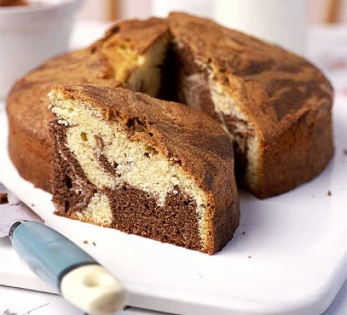
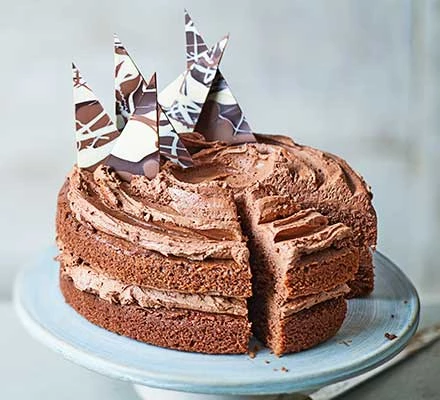
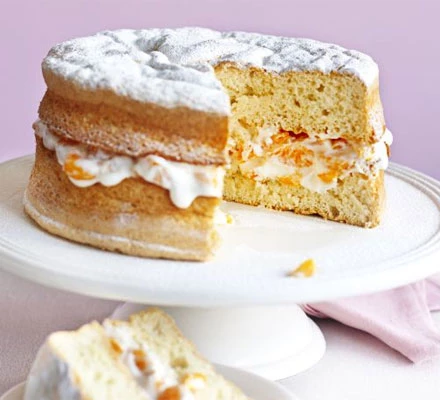
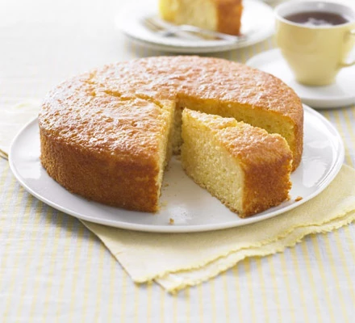
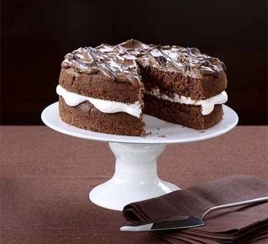
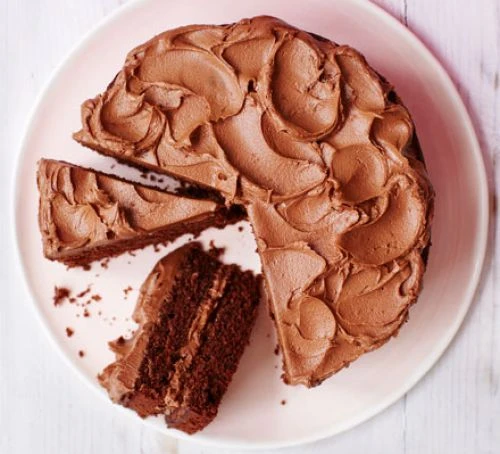
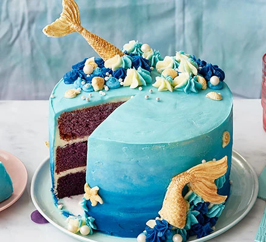
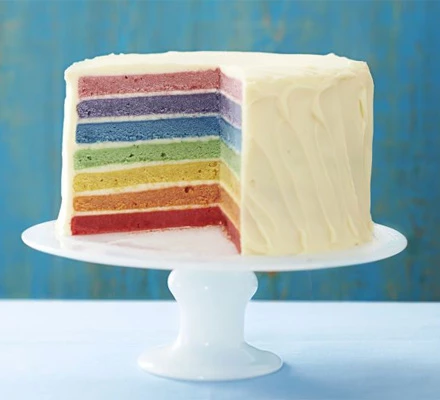
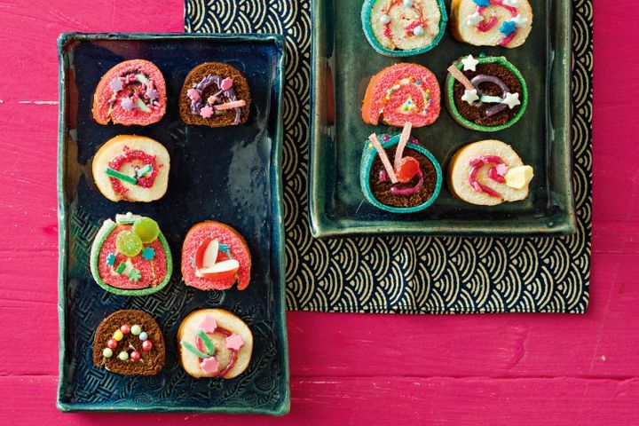

Have a scroll down for any cakes or use the toolbar to look for specific types...
Want to show your cake skills off? Click on the link to the Contact Us section where you can add your own recipes
Chocolate Cakes

- 225g butter, softened
- 225g caster sugar
- 4 eggs
- 225g self-raising flour
- 3 tbsp milk
- 1 tsp vanilla extract
- 2 tbsp coco powder
Ingredients
- Heat oven to 180C/fan 160C/gas 4. Grease a 20cm cake tin and line the bottom with a circle of greaseproof paper.
- If you want to make life easy, simply put 225g butter, 225g caster sugar, 4 eggs, 225g self-raising flour, 3 tbsp milk and 1 tsp vanilla extract into a food processor and whizz for 1-2 mins until smooth.
- If you prefer to mix by hand, beat 225g butter and 225g caster sugar together, then add 4 eggs,one at a time, mixing well after each addition.
- Fold through 225g self-raising flour, 3 tbsp milk and 1 tsp vanilla extract until the mixture is smooth.
- Divide the mixture between 2 bowls. Stir 2 tbsp cocoa powder into the mixture in one of the bowls. Take 2 spoons and use them to dollop the chocolate and vanilla cake mixes into the tin alternately.
- When all the mixture has been used up (and if young kids are doing this, you’ll need to ensure the base of the tin is fairly evenly covered), tap the bottom on your work surface to ensure that there aren’t any air bubbles.
- Take a skewer and swirl it around the mixture in the tin a few times to create a marbled effect.
- Bake the cake for 45-55 mins until a skewer inserted into the centre comes out clean. Turn out onto a cooling rack and leave to cool. Will keep for 3 days in an airtight container or freeze for up to 3 months.
Recipe

- 200g golden caster sugar
- 200g unsalted butter, softened plus extra for the tins
- 4 large eggs
- 200g self-raising flour
- 1 tsp baking powder
- ½ tsp vanilla extract
- 2 tbsp milk
- 2 tbsp cocoa powder
Ingredients
For the cake
- 5 tbsp cocoa powder
- 100g milk chocolate, chopped
- 200g butter, softened
- 400g icing sugar
- 2 tbsp milk
For the buttercream
- 50g dark chocolate
- 25g milk chocolate
- 25g white chocolate
For the chocolate shards (optional)
- Heat oven to 190C/170C fan/gas 5. Butter the base and sides of two 20cm round sandwich tins and line the bases with baking parchment.
- In a large bowl, beat together 200g golden caster sugar, 200g softened unsalted butter, 4 large eggs, 200g self-raising flour, 2 tbsp cocoa powder, 1 tsp baking powder, ½ tsp vanilla extract, 2 tbsp milk and a pinch of salt until pale.
- Divide the mixture between the prepared tins. Bake for 20 mins or until a skewer inserted into the centre of the cake comes out clean.
- Leave to cool in the tin for 10 mins, then turn out onto a wire rack to cool completely.
- For the buttercream, put 100g chopped milk chocolate in a heatproof bowl and melt in the microwave, stirring every 30 secs. Leave the melted chocolate to cool for 5 mins.
- Mash 200g softened butter and 400g icing sugar together with a fork, then switch to a wooden spoon or electric beaters, if you have them. Sift in 5 tbsp cocoa powder with a pinch of salt and pour in the melted chocolate and 2 tbsp milk. Mix again until smooth.
- On a cake stand or large plate, sandwich the cakes together with half of the buttercream, then spread the rest on top. Decorate with chocolate shards, if you like.
- To make chocolate shards: melt 50g dark chocolate and pour it onto a tray lined with baking parchment or foil. Now melt 25g milk chocolate and 25g white chocolate and drizzle them over the dark chocolate before it sets.Shake the tray gently to level the mixture then leave to set somewhere cool. Chop into shards.
Recipe

- 3 large eggs
- 175g self-raising flour
- 175g caster sugar
- 175g softened butter
- 1½ level tsp baking powder
- 40g cocoa powder
- 4 tbsp boiling water
- 4 tbsp apricot jam
Ingredients
- 150ml double cream
- 150g (5oz) plain chocolate, broken into pieces
- A little icing sugar, to serve
For the chocolate icing
- Preheat the oven to 180C, gas 4. Beat together the eggs, flour, caster sugar, butter, and baking powder until smooth in a large mixing bowl.
- Put the cocoa powder in a separate mixing bowl, and add the water a little at a time to make a stiff paste. Add to the cake mixture.
- Turn into the prepared tins, level the top, and bake in the preheated oven for about 20-25 mins, or until shrinking away from the sides of the tin and springy to the touch.
- Leave to cool in the tin, then turn on to a wire rack to become completely cold before icing.
- To make the icing: measure the cream and chocolate into a bowl and carefully melt over a pan of hot water over a low heat, or gently in the microwave for 1 min (600w microwave). Stir until melted, then set aside to cool a little and to thicken up.
- To ice the cake: spread the apricot jam on the top of each cake. Spread half of the ganache icing on the top of the jam on one of the cakes, then lay the other cake on top, sandwiching them together.
- Use the remaining ganache icing to ice the top of the cake in a swirl pattern. Dust with icing sugar to serve.
- Use the remaining ganache icing to ice the top of the cake in a swirl pattern. Dust with icing sugar to serve.
Recipe
Healthy Cakes

- butter or oil, for greasing
- 50g plain flour
- 3 tbsp cornflour
- 1 tsp baking powder
- 4 eggs , separated
- 175g caster sugar
Ingredients
- 295g can mandarin segment , drained
- 200g tub low-fat fromage frais
- icing sugar , for dusting
For the filling
- Heat oven to 180C/fan 160C/gas 4. Grease then line the base and sides of 2 x 20cm sandwich tins with greaseproof paper. Sieve the flours and baking powder together.
- Use electric hand beaters to whisk the egg whites until stiff, then briefly whisk in the sugar. Beat the egg yolks quickly, then whisk into the whites. Fold in the dry ingredients using a large metal spoon, then spoon the mixture into the tins and level the tops.
- Bake for 18-20 mins until risen, light golden and a skewer inserted into the middle comes out clean. Cool in the tins for 10 mins, then gently remove and leave to cool completely.
- Mix the mandarins and fromage frais together. Peel away the greaseproof paper, sandwich the cakes with the mandarin mix, then dust with the icing sugar to serve. Best eaten on the day it’s made.
Recipe

- 75ml rapeseed oil , plus extra for the tin
- 175g self-raising flour
- 1 ½ tsp baking powder
- 50g ground almond
- 50g polentala
- finely grated zest 2 lemons
- 140g golden caster sugar
- 2 large eggs
- 225g natural yogurt
Ingredients
- 85g caster sugar
- juice 2 lemon (about 5 tbsp)
For thr filling
- Heat oven to 180C/160C fan/gas 4. Lightly oil a 20cm round x 5cm deep cake tin and line the base with baking parchment. For the cake, put the flour, baking powder, ground almonds and polenta in a large mixing bowl. Stir in the lemon zest and sugar, then make a dip in the centre. Beat the eggs in a bowl, then stir in the yogurt. Tip this mixture along with the oil into the dip (see step-by-step number 1), then briefly and gently stir with a large metal spoon so everything is just combined, without overmixing./li>
- Spoon the mixture into the tin and level the top (step 2). Bake for 40 mins or until a skewer inserted into the centre of the cake comes out clean. Cover loosely with foil for the final 5-10 mins if it starts to brown too quickly.
- While the cake cooks, make the lemon syrup. Tip the caster sugar into a small saucepan with the lemon juice and 75ml water. Heat over a medium heat, stirring occasionally, until the sugar has dissolved. Raise the heat, boil for 4 mins until slightly reduced and syrupy, then remove from the heat.
- Remove the cake from the oven and let it cool briefly in the tin. While it is still warm, turn it out of the tin, peel off the lining paper and sit the cake on a wire rack set over a baking tray or similar. Use a skewer to make lots of small holes all over the top of the cake (step 3). Slowly spoon over half the lemon syrup (step 4) and let it soak in. Spoon over the rest in the same way, brushing the edges and sides of the cake too with the last of the syrup.
For the filling

View Recipe
Vegan Cakes

Craxy Cakes

View Recipe

View Recipe

View Recipe